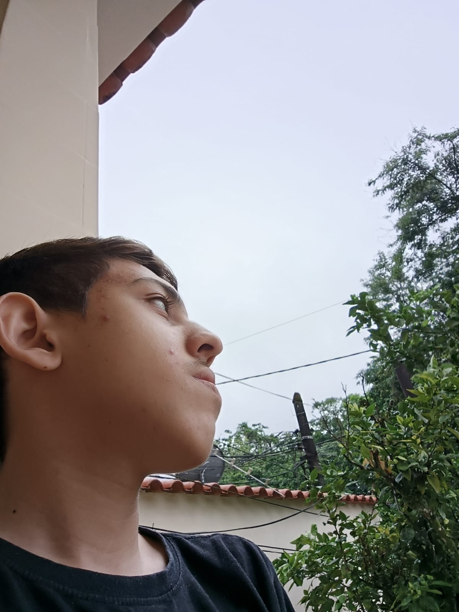

Mais Detalhes
Fundada em 1998, a Ronstens foi criada pela já falecida, Nathália Ferreira Ronstens, a qual em sua época de moça, trabalhava em agências de viagens, formada em turismo, veio a ter sua ideia empreendedora em sua velhice, na qual elaborou um novo vínculo, voltado ( na época ) em atender as necessidades do mercado de agência de viagens, que por vezes possuía empecilhos na colaboração com alguns hotéis. Com essa visão, nós surgimos, com o objetivo de efetivar esse processo, evoluindo com o tempo ao auxílio do cliente único, não nos prendendo apenas as agências. A senhorita Ronstens era formada em turismo, economia e direito, e possuía um valor visionário, usando em prol de guiar uma nova geração a um ramo não tão divulgado, as como já exemplificado na página de abertura, de extrema importância. Com isso, lidamos com toda a burocracia nessa corrente que fica entre os hotéis e seus contratadores, nos entrelaçando em todos os ramos que envolve a hospedagem e o cliente, ficando a frente de todos os pros e contras que possam vir a ocorrer no decorrer de sua viagem. Atualmente nossa sede se encontra sendo virtual, embora haja polos nossos mesclados aos hotéis aos quais fazemos parcerias, então é apenas um pulo para nos encontrar, podendo claro, utilizar dos meios de contato disponíveis, como o whatsapp, número de contato, e-mail, e as redes sociais. Vale-se a menção que somos aprovados tanto pela Agência Brasileira de Promoção Internacional do Turismo(EMBRATUR), e a Cadastro de Prestadores de Serviços Turísticos (CADASTUR), podendo qualquer dúvida sobre a questão ser respondida pelos nossos operadores de comunicação, por meio dos serviços mencionados de contato. Abaixo estará situado os nossos principais organizadores, indicando seu nome, foto e função:
 |
Eduardo Farias | Gianluca Nascimento | Cauã Andrade |
| (21)97351-4025 | (21)99108-6579 | (21)99709-4013 |
| CEO | CFO | COO |